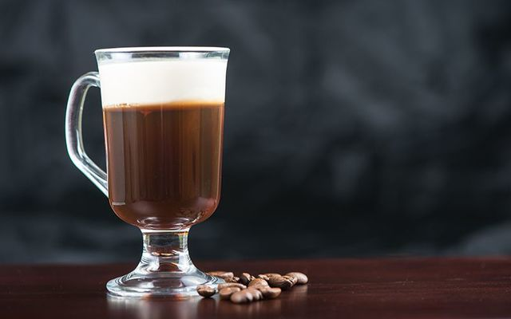

Irish Coffee
This just has four simple ingredients to use, so it can be made fairly quick. It also pairs well with rolling green hills and cold foggy mornings!

Ingredients:
1 1/2 onces of your favorite whiskey
1 tablespoon of brown sugar
1 cup of freshly brewed coffee, 6 - 8 onces
Heavy cream, slightly whipped
Tea kettle of near boiling water (optional)
If you are using the tea kettle, get the water hot first and pour it into the cup. Let stand for about a minute, and discard the water.
Pour about 2/3 of the coffee in to the cup, and add the brown sugar. Stir until disolved and pour in the rest of the coffee
Pour in the whiskey and stir gently
Gently pour the heavy cream over the back of a spoon, into the hot coffee. This will help the cream float on top of the coffee. Serve hot and enjoy!
* This is served tradionally in a stemmed mug (see picture)
- Serves 1